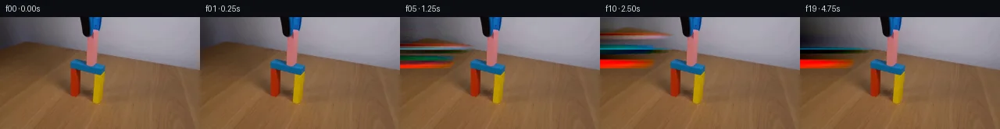

![首帧]()

快照 00
2026-11-06T11:57:48.901583+00:00像素候选变化代码 +297/−0inspection 更新
pixels fc942906f2f90fe3 · code f52deadc0b82be1d
查看本次 generate.py 真实 diff
--- previous/generate.py +++ current/generate.py @@ -0,0 +1,297 @@ +#!/usr/bin/env python3 +"""PixelWorld-Text: Grabber Retraction Animation Generator. + +Method: The blue-black grabber tool on the left side retracts upward over 20 frames. +- A background plate is created by linear horizontal gradient extrapolation behind the grabber. +- The signed pixel difference (original - background) captures the grabber including anti-aliased edges. +- Each frame shifts the grabber difference upward on the ease-out retraction curve, + revealing the extrapolated background beneath. +""" + +from pathlib import Path +import numpy as np +from PIL import Image, ImageDraw + +CASE_DIR = Path(__file__).parent + +def retraction_shift(t): + """Ease-out retraction: d(t) = total_height * (t/19)^2 for t > 0.""" + if t == 0: + return 0.0 + total = 67.0 + return total * (t / 19.0) ** 2 + + +def create_grabber_mask(arr): + """Identify grabber pixels: contiguous dark region from x=0 in rows 0-66.""" + h, w = arr.shape[:2] + mask = np.zeros((h, w), dtype=bool) + right_edge = np.full(h, -1, dtype=int) + + for y in range(67): + row = arr[y] + # Dark: R<100, G<105, B<115 (captures blue-black grabber including anti-aliased edge) + dark = (row[:, 0] < 100) & (row[:, 1] < 105) & (row[:, 2] < 115) + edge = -1 + for x in range(w): + if not dark[x]: + break + edge = x + right_edge[y] = edge + if edge >= 0: + mask[y, : edge + 1] = True + return mask, right_edge + + +def create_background_plate(arr, right_edge): + """Create a clean background plate by extrapolating background behind the grabber. + + For each row y with grabber: + - Sample visible pixels to the right of the grabber edge + - Fit a linear gradient per channel and extend leftward to x=0 + - Anti-alias the transition at the grabber edge + """ + h, w = arr.shape[:2] + bg = arr.copy().astype(np.float32) + + for y in range(67): + edge = right_edge[y] + if edge < 0: + continue + + sample_start = edge + 1 + sample_end = min(edge + 31, w) + if sample_end - sample_start < 5: + # Not enough samples; use nearest neighbor + if sample_start < w: + bg[y, : edge + 1] = arr[y, sample_start].astype(np.float32) + continue + + samples = arr[y, sample_start:sample_end].astype(np.float32) + xs = np.arange(sample_start, sample_end, dtype=np.float32) + + for c in range(3): + vals = samples[:, c] + # Linear regression: vals = slope * x + intercept + mean_x = xs.mean() + mean_v = vals.mean() + slope = np.sum((xs - mean_x) * (vals - mean_v)) / np.sum((xs - mean_x) ** 2 + 1e-8) + intercept = mean_v - slope * mean_x + + xs_fill = np.arange(0, edge + 1, dtype=np.float32) + fill_vals = slope * xs_fill + intercept + # Add small per-pixel noise to avoid flat gradient artifacts + noise_scale = max(1.0, np.std(vals) * 0.3) + noise = np.random.RandomState(y * 256 + c).normal(0, noise_scale, len(xs_fill)) + fill_vals = fill_vals + noise + bg[y, : edge + 1, c] = np.clip(fill_vals, 0, 255) … diff truncated; 210 more lines …